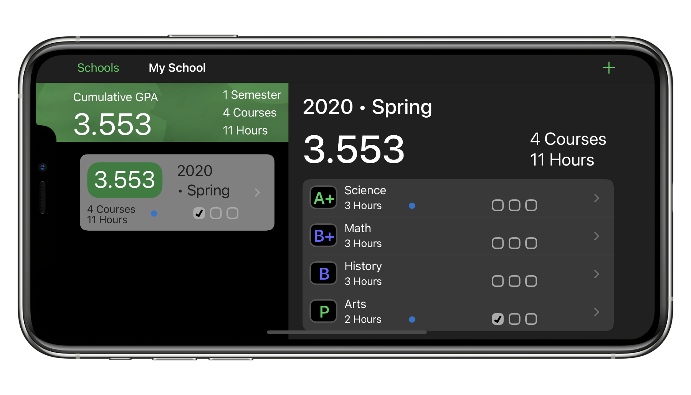

Fourpoint makes it easy for to calculate the GPA of a single semester, or the cumulative GPA of your educational career. As you add semesters and courses Fourpoint will provide you quick and accurate GPA results.
• Supports multiple schools • Supports iCloud syncing to keep your devices up to date

GPA Made Easy
